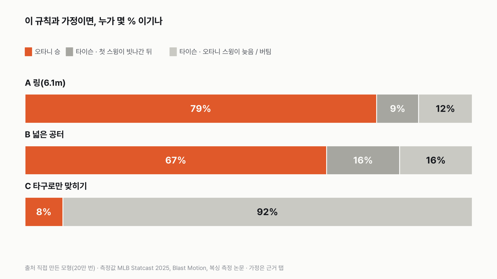
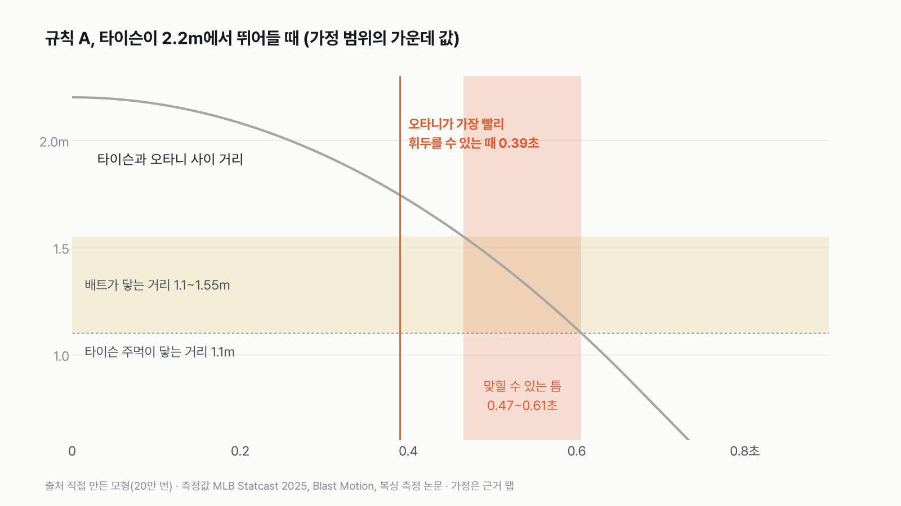
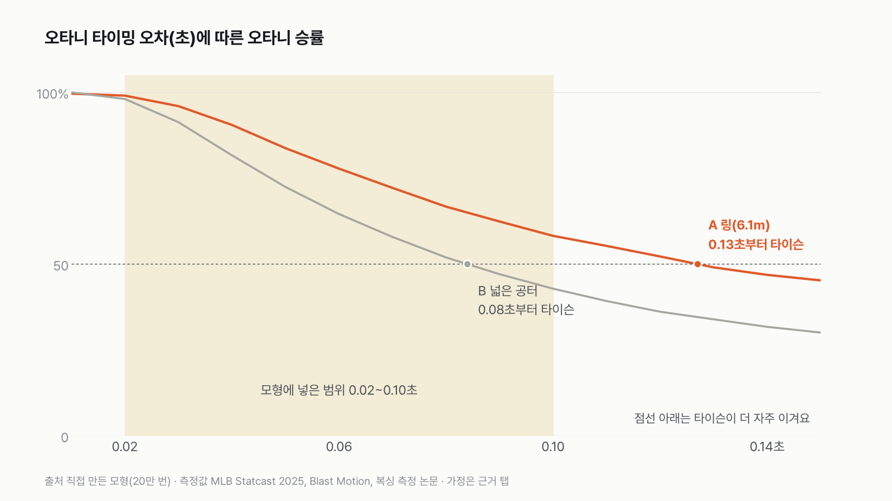

타이슨 vs 방망이 든 오타니, 링에선 오타니가 79%
이 대결은 '첫 스윙의 타이밍이 0.1초 안쪽으로 맞느냐'로 갈려요.

- 이 규칙과 가정이면, 링(한 변 6.1m)에서는 오타니가 79%, 넓은 공터에서는 67% 이겨요. 거의 다 첫 스윙에서 끝나요.
- 첫 스윙이 빗나가면 타이슨이 이겨요. 타이슨은 0.16초면 주먹이 닿고, 오타니가 다시 휘두르려면 0.5~1초가 걸려요.
- 오타니가 공을 쳐서 맞혀야만 하는 규칙에서는 타이슨이 92% 이겨요. 오타니의 타이밍 오차가 링에서 0.13초, 공터에서 0.08초를 넘어도 타이슨 쪽으로 뒤집혀요.
규칙부터 정했어요. 그냥 붙이면 어느 쪽에 유리한 판을 깔았느냐로 결과가 정해져 버려서요. 그래서 판을 셋으로 나눴어요. A는 한 변 6.1m 링이에요. 미국 주 규정이 허용하는 가장 큰 크기(20피트)라 오타니에게 한 뼘이라도 공간을 더 줬어요. B는 넓은 공터예요. 오타니가 뒤로 물러나 거리를 지킬 수 있어서, 타이슨이 먼 데서 다가오는 걸 처음부터 볼 수 있어요. C는 오타니가 배트로 사람을 직접 치지 못하고, 투수가 던진 공을 쳐서 타구로만 맞혀야 하는 판이에요. A·B에서 배트라는 도구가 오타니에게 너무 유리할 수 있어서 반대쪽 판도 같이 돌렸어요.
이 규칙과 가정이면, 링에서는 오타니가 79% 이겨요. 이긴 경우는 전부 첫 스윙이었어요. 타이슨이 이긴 21% 가운데 9%는 오타니의 첫 스윙이 너무 일찍 지나가 빗나간 경우, 12%는 타이슨이 배트가 지나가기 전에 안쪽까지 들어온 경우예요.

왜 이렇게 되는지는 거리와 시간으로 그려 보면 보여요. 가정 범위의 가운데 값으로 타이슨이 2.2m에서 뛰어들면, 오타니가 그걸 보고 반응해서 배트가 앞을 지나갈 수 있는 가장 빠른 때가 0.39초예요. 타이슨은 0.47초에 배트가 닿는 거리(1.55m)로 들어오고, 0.61초에 주먹이 닿는 거리(1.1m)에 와요. 오타니가 맞힐 수 있는 틈은 0.47~0.61초, 0.14초예요. 오타니는 늦지 않게 휘두를 수는 있어요. 문제는 그 0.14초 안에 맞추는 거예요.
빗나가면 거기서 끝이에요. 첫 스윙이 일찍 지나간 경우, 그 뒤 타이슨이 주먹 거리까지 오는 데 걸린 시간은 중앙값 0.16초였어요. 오타니가 다시 휘두르려면 0.5~1초가 필요하다고 가정했으니, 두 번째 스윙이 제때 나온 경우는 20만 번 가운데 한 번도 없었어요. 그래서 이 대결은 사실상 스윙 한 번으로 정해져요.
넓은 공터(B)에서는 오타니가 67%로 줄었어요. 저도 공간이 넓으면 오타니가 더 유리할 줄 알았어요. 계산해 보니 이유가 있었어요. 멀리서 출발한 타이슨은 배트 거리에 들어올 때 이미 최고 속도라서, 배트 구간을 지나는 시간이 링에서보다 짧아요(중앙값 0.15초 → 0.11초). 맞힐 틈이 좁아지는 거예요. 공터에서 타이슨은 33% 이겨요.
타구로만 맞혀야 하는 판(C)은 완전히 뒤집혀요. 이 규칙과 가정이면 타이슨이 92%예요. 마운드 거리 18.44m에 선 사람의 상체(가로 0.5m, 세로 0.8m)는 오타니에게서 보면 좌우 ±0.8도, 위아래 ±1.2도 안에 들어와요. 오타니가 2025년에 휘두른 공 가운데 배트에 맞힌 비율은 69%였어요. 여기에 겨누는 오차와 타이슨이 공을 보고 피할 확률을 곱하면 한 구에 맞힐 확률은 중앙값 0.18%예요. 3분 3라운드 9분 동안 투구 시계(15초)대로 36구를 받아도 오타니가 한 번이라도 맞힐 확률은 8%예요.
결과가 뒤집히는 첫 번째 조건은 오타니의 타이밍 오차예요. 이 모형에서 가장 덜 확실한 숫자이기도 해요. 오차가 링에서는 0.13초, 공터에서는 0.08초를 넘으면 타이슨이 더 자주 이겨요. 머리를 흔들고 속도를 바꾸는 복서를 상대로 오타니가 얼마나 맞출지는 잰 기록이 없어요.

두 번째 조건은 타이슨이 뛰어드는 거리예요. 다른 가정은 범위 그대로 두고 출발 거리만 바꿔 봤어요. 1.6m에서 뛰어들면 오타니 62%, 1.5m에서는 35%로 내려가요. 50%가 갈리는 지점은 약 1.55m, 딱 배트 끝이 닿는 거리예요. 타이슨이 배트 거리 안에 이미 서 있는 상태에서 출발할 수 있으면, 오타니는 반응하고 휘두르는 0.39초 안에 이미 늦어요. 거꾸로 1.8m보다 멀면 오타니는 67~88% 사이에서 거의 그대로예요.
한쪽으로 몰아 준 끝 값도 돌려 봤어요. 타이슨에게 유리한 쪽 끝(가장 빠른 전진, 가장 긴 리치, 오타니의 느린 반응과 큰 오차)만 고르면 오타니는 링에서 23%, 공터에서 16%예요. 오타니에게 유리한 쪽 끝만 고르면 둘 다 100%예요. 가정이 결과를 얼마나 크게 흔드는지 보여 주는 숫자라, 79%라는 숫자 하나보다 이 폭을 같이 봐야 해요.
마지막으로 속도와 에너지를 나란히 놓아 봤어요. 주먹은 초속 9m 안팎이고, 오타니 배트는 평균 초속 33.9m로 3.7배 빨라요. 에너지로 바꾸면 펀치 평균 121J, 오타니의 가장 빠른 타구 209J로 1.7배 차이예요. 배트가 빠른 건 분명한데, 이 모형에서 승부를 가른 건 배트가 '언제 지나가느냐'였어요.

이 숫자는 어디서 왔나요
출처
기준일 오타니 측정값은 2025년 정규시즌(Statcast, 2026년 11월 6일 받음). 펀치 측정은 1985·2000·2005년 논문이에요. 모형은 2026년 11월 6일에 돌렸어요.
MLBStatcast
- 배트 트래킹·타구 속도 (Baseball Savant)원본 보기
오타니 2025년 배트 스피드, 스윙 길이, 배트에 맞힌 비율, 타구 속도
MLBStats API
- 선수 정보 (MLB Stats API 660271)
오타니 키 193cm, 체중 210파운드
Blast MotionWhat Is Time to Contact
- 스윙 시간 기준 (Time to Contact)
프로 스윙 시간 범위 0.13~0.17초
Walilko·Viano·Bir 2005,British Journal of Sports Medicine
- 올림픽 복서 직선 펀치 측정doi:10.1136/bjsm.2004.014126원본 보기
손 속도, 유효 질량, 펀치 힘
Atha 외 1985,BMJ
- 헤비급 프로 펀치 측정doi:10.1136/bmj.291.6511.1756원본 보기
맞는 순간 속도, 펀치가 0.1초에 간 거리
Smith 외 2000,Journal of Sports Sciences
- 엘리트 복서 최대 펀치 힘PMID 10902679원본 보기
뒷손 최대 힘
미국 주 체육위원회 규정
- 링 규격 (Wisconsin SPS 192.37 등)
링 한 변 16~20피트(4.9~6.1m)
어떻게 셌나요
- 규칙 셋을 먼저 정하고 그다음 숫자를 넣었어요. 공통 규칙은 '머리나 몸에 제대로 한 번 맞으면 끝'이에요.
- 측정값이 있는 건 측정값을 썼어요. 오타니의 스윙 시간(휘두르기 시작해서 공에 맞기까지)은 Statcast 스윙 길이 7.93피트(2.42m)를 배트 스피드로 나눠 0.14초로 계산했고, Blast Motion이 밝힌 프로 범위(0.13~0.17초)와 맞아요.
- 측정값을 찾지 못한 건 범위로 된 가정을 넣었어요. 타이슨이 다가오는 속도, 오타니의 반응 시간, 헛스윙 뒤 다시 휘두르기까지 걸리는 시간, 사람을 겨눌 때 오타니의 타이밍 오차가 그래요. 범위 안에서 값을 고르게 뽑아 20만 번 돌렸어요(몬테카를로).
- 타이밍 오차는 오타니가 노린 순간과 배트가 실제로 지나간 순간의 차이예요. 이 모형에서는 0.02~0.10초로 뒀어요.
- 타이슨 본인의 펀치를 잰 공개 기록은 없어요. 그래서 타이슨 쪽 거리는 공개된 키(178cm)와 리치(180cm)로 잡고, 펀치 속도는 다른 복서들을 잰 논문 값을 썼어요.
한계 6가지
이 데이터로 말할 수 없는 것
- 모형이에요. 실제로 붙여 본 결과가 아니고, 규칙과 가정을 바꾸면 숫자가 바뀌어요. 그래서 한쪽 끝 값과 뒤집히는 조건을 같이 적었어요.
- 타이슨이 머리를 숙이거나 옆으로 비켜 배트를 피하는 움직임, 페인트(속이는 동작), 오타니가 짧게 끊어 치는 스윙은 넣지 않았어요. 넣는다면 타이밍 오차가 커지거나 작아지는 쪽으로 들어갈 거예요.
- 타이슨 전진 속도·가속도, 오타니 반응 시간, 헛스윙 뒤 회복 시간, 사람을 겨눌 때의 타이밍 오차, 타구를 겨누는 정확도, 공을 피할 확률은 공개 측정을 찾지 못해 범위로 가정했어요.
- 타이슨 본인의 펀치 측정값은 쓰지 않았어요. 인터넷에 도는 '1,600파운드', '800줄' 같은 숫자는 원래 연구를 찾을 수 없었어요.
- 펀치 논문은 사람 수가 적어요(7명, 1명). 실험실에서 표적을 친 값이에요.
- 스윙 시간 범위는 장비 회사(Blast Motion)가 밝힌 기준이에요. Statcast 스윙 길이로 계산한 값(0.14초)과 맞아서 썼어요.
계산 기록
쓰기 전에 정한 것
- 규칙 셋(링, 공터, 타구만)과 공통 규칙('제대로 한 번 맞으면 끝')을 모형을 돌리기 전에 정했어요.
- 처음 글은 승패를 말하지 않는 기준으로 썼어요. 그 기준이 바뀌어 같은 날 다시 썼고, 그래서 여기 적어 둬요.
- 측정값이 없는 숫자는 범위로 넣고, 결과가 뒤집히는 조건을 같이 보이기로 했어요.
- 다치는 묘사는 하지 않기로 했어요. '맞으면 끝'까지만 다뤄요.
처음 던진 질문
마이크 타이슨(맨주먹)과 방망이를 든 오타니 쇼헤이가 붙으면 누가, 어떻게 이길까요? 규칙을 먼저 정하고, 잴 수 있는 숫자와 숨기지 않은 가정으로 20만 번 돌려 봤어요.
수집·검증 기록
- 모형: pipelines/model_tyson_ohtani.py, 20만 번(규칙별), 씨앗 20261106. 민감도는 4만 번씩.
- 측정값: 스윙 길이 7.932848506 ft, avg_bat_speed 75.840889652 mph → 2L/v = 2×2.418/33.90 = 0.143 s. 배트에 맞힌 비율 790/1,151 = 0.686. 키·체중: MLB Stats API 6' 4", 210 lb. 타이슨 키 178cm, 리치 180cm(위키백과 기재값).
- 가정 범위(균등분포): 주먹 닿는 거리 R_T 1.0~1.2m, 몸 중심~스위트 스팟 R_B 1.2~1.5m(배트 구간 바깥 끝 R_B+0.2m), 전진 가속도 4~8 m/s², 최고 속도 3~5 m/s, 반응 시간 0.18~0.30 s(가정, 시각 단순 반응 시간이 보통 0.2초 안팎이라는 연구들을 참고), 스윙 시간 0.13~0.17 s, 타이밍 오차(표준편차) 0.02~0.10 s, 회복 시간 0.5~1.0 s. 출발 거리 A 1.8~2.6m, B 4~8m.
- 판정: 배트가 지나는 시각 = max(노린 시각 + 오차, 반응+스윙). 그때 거리가 R_T 초과 R_B+0.2 이하이면 오타니 승. 일찍 빗나가면 회복 뒤 두 번째 스윙 기회, 그 전에 R_T 도착이면 타이슨 승.
- 결과: A 오타니 0.7864(첫 스윙 0.7864, 두 번째 0), 타이슨 0.2136(일찍 빗나감 0.0938, 늦음 0.1198). B 오타니 0.6746, 타이슨 0.3254(0.1628, 0.1626). 차트의 16%+16%와 33%는 반올림 차이.
- 중앙값: 맞힐 틈 A 0.145 s, B 0.112 s. 가장 빠른 스윙 통과 0.390 s. A 타이슨 도착 0.609 s. 일찍 빗나간 뒤 타이슨 도착까지 A 0.155 s, B 0.140 s.
- 가운데 값 그림(A, 출발 2.2m, a 6, vmax 4, R_T 1.1, R_B 1.35): 배트 구간 진입 0.465 s, 주먹 거리 0.606 s.
- 뒤집히는 지점: 타이밍 오차 A 0.127 s, B 0.084 s(선형 보간). 출발 거리 1.5m 0.352, 1.6m 0.619 → 약 1.55m. 1.8~8m에서는 0.670~0.882.
- 끝 값: 타이슨 유리(R_T 1.2, R_B 1.2, a 8, vmax 5, 반응 0.30, 스윙 0.17, 오차 0.10, 회복 1.0) A 0.226, B 0.158. 오타니 유리(반대 끝) A·B 1.000.
- C: 마운드 18.44m, 상체 0.5×0.8m → 반각 0.78°, 1.24°. 겨누기 오차 5~15°(좌우·위아래 각각), 피할 확률 30~80%, 9분 ÷ 15초 = 36구. 한 구 확률 중앙값 0.0018, 오타니 승 0.0846.
- 속도·에너지: 1 mph = 0.44704 m/s. 배트 평균 33.90, 최고 39.07, 최고 타구 53.64 m/s. 펀치 ½ × 2.9 × 9.14² = 121.1 J(유효 질량 0.9~4.9kg이면 37.6~204.7 J), 타구 ½ × 0.145 × 53.64² = 208.6 J. 3.71배, 1.72배.
- 논문 숫자는 Europe PMC 초록과 대조(2026-11-06). Atha 1985: 펀치가 0.1초에 0.49m 이동, 맞는 순간 8.9 m/s, 4,096 N. 값은 data/raw/papers/boxing_punch.yaml.
- 외부 링크: Blast Motion Time to Contact, 링 규격은 Wisconsin SPS 192.37·Missouri 20 CSR 2040-6(16~20피트), MLB 투구 시계(주자 없을 때 15초, 2023년 도입).
- 스크립트: pipelines/statcast_ohtani.py, pipelines/model_tyson_ohtani.py, pipelines/chart_odd_tyson_ohtani.py, pipelines/chart_odd_tyson_ohtani_speed.py. 마트: data/mart/odd/tyson_ohtani.csv, tyson_ohtani_model.csv, tyson_ohtani_sens_d0.csv, tyson_ohtani_sens_sigma.csv, tyson_ohtani_extremes.csv.
새 글 나오면 받아 보기
피드 리더 앱에 이 사이트 주소를 한 번 넣어 두면, 새 글이 올라올 때 앱에 떠요. 가입이나 메일 주소는 필요 없어요.
받는 법 보기
- 피드 리더 앱을 하나 골라요. 새 글을 모아 보여 주는 앱이에요. 예를 들면 Feedly나 Inoreader가 있어요. 둘 다 무료고 웹·휴대폰에서 써요.
- 앱에서 '구독 추가'(+)를 누르고 아래 주소를 붙여 넣어요.
- 끝이에요. 새 글이 올라오면 앱 목록에 떠요.
https://protofu.github.io/opendata-insight/feed.xmlFeedly를 쓴다면 여기를 눌러 바로 추가할 수도 있어요.